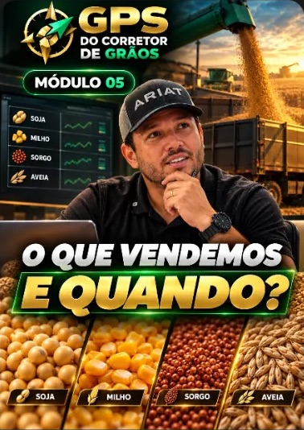
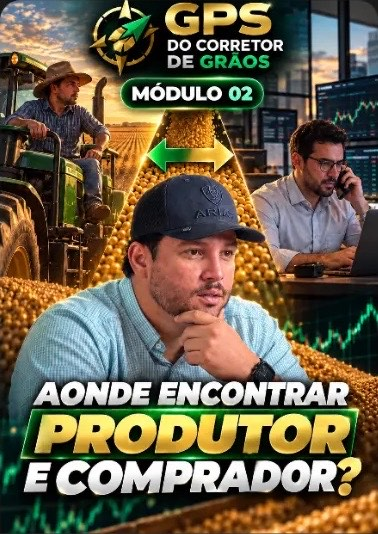
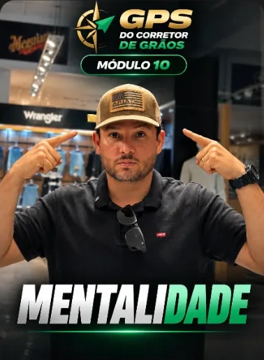
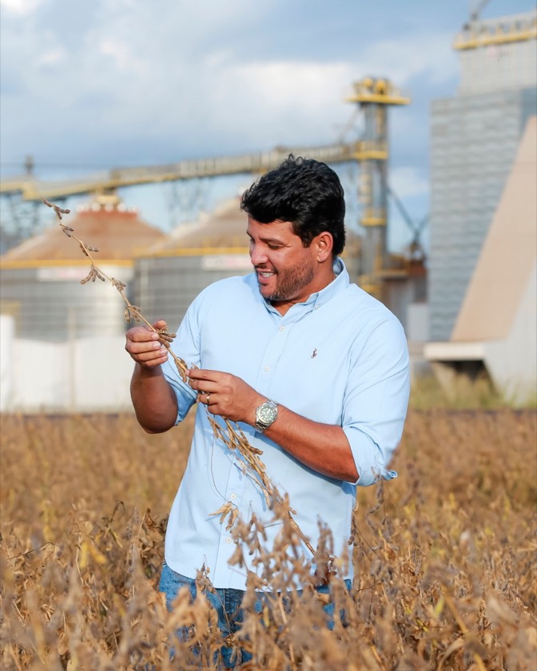

MÓDULO 01
O que um corretor de grãos faz
O dia a dia da profissão e o papel dele entre quem vende e quem compra.
GPS do Corretor de Grãos
A profissão que permite ganhar comissões de 10 a 30 mil por mês dentro do mercado que você já conhece, sem capital próprio e sem deixar o que você faz hoje.
Acesso imediato · Pagamento seguro · 7 dias de garantia

A realidade
Você vê a safra saindo, os caminhões carregados, o dinheiro rodando bem ao seu lado todos os dias. Talvez você trabalhe dentro disso: agrônomo, classificador, vendedor de insumos, corretor de imóveis. Talvez trabalhe em outra área, mas vive perto desse mercado e sabe que ali tem oportunidade.
E mesmo assim, no fim do mês, a conta não acompanha o esforço. Você trabalha de segunda a segunda, depende de um salário com teto definido por outra pessoa ou só ganha mais se trabalhar mais horas.
Sobra pouco tempo pro que realmente importa: levar seu filho na escola, almoçar em casa, estar presente nas apresentações de escola, viajar com a família, ter um fim de semana tranquilo, poder levar sua família pra jantar em lugar bacana.
E se nada mudar? Daqui a 3 anos a história é a mesma: mesma renda, mesma correria, mesmo "ano que vem eu vejo isso".
O arrependimento que mais escuto dos alunos não é sobre dinheiro. É sobre o tempo que perderam enrolando pra começar.
Agora presta atenção, porque quase ninguém te conta isso: você não ganha pouco por falta de esforço nem de competência. Você ganha pouco porque, na maioria das profissões, o que você recebe é proporcional ao tamanho do negócio em que você está diretamente envolvido. E a sua função, hoje, fica longe de onde o dinheiro grande realmente se move.
Na corretagem de grãos, um único negócio fechado movimenta milhões, e é em cima disso que sai a sua comissão.
Será que existe uma forma de ganhar mais dentro desse mercado, sem precisar de capital e sem começar do zero em outra área?
Conectando quem vende grão a quem compra e recebendo uma comissão por negócio fechado. Isso não acontece sozinho nem de um dia para o outro: exige aprender o método e se dedicar. Mas o que você precisa pra começar, você provavelmente já tem: uma região que produz, um telefone e a vontade de mudar de vida.
Eu sei o que você pode estar pensando: "mais um curso que promete e não entrega". Por isso aqui não tem milagre. Tem um passo a passo.
O Givanildo tinha uma empresa há 15 anos, com 5 funcionários, e estava insatisfeito com o que fazia. Entrou na corretagem de grãos, hoje não tem mais a empresa anterior e já recebeu R$ 43 mil de comissão em um único negócio.
Depois da compra, o acesso chega no seu e-mail na hora. Você assiste às aulas para entender o fluxo completo do mercado e cada etapa até a sua primeira comissão. Em seguida, aplica as estratégias que eu ensino para conseguir os contatos e abordá-los do jeito certo, de forma que eles queiram fazer negócio com você.
Quero meu acesso agora→O caminho
O corretor de grãos não compra nem vende grão com dinheiro próprio. Ele conecta quem tem grão a quem quer comprar. E funciona assim:
Você liga para o produtor e descobre se ele tem grão disponível.
Você liga para o comprador e oferta esse grão, já com uma ideia de preço.
Se o negócio fecha, a comissão é sua.
Não é um mistério. Quem compra grão é gente que depende dele todo dia. Todos eles precisam de alguém que leve o grão até eles, com rapidez e no preço certo. Essa pessoa pode ser você.
No módulo 2 do GPS eu mostro onde encontrar esses compradores e os produtores, e como abordá-los.
Você não precisa de capital porque não compra o grão: você só intermedia a negociação.
E se você ainda não conhece ninguém, tudo bem. Como em qualquer negócio, a corretagem tem um processo de prospecção, e é justamente esse processo que eu te ensino.
Faça a sua conta
Vamos para a conta, com uma operação pequena: 10.000 sacas de soja a R$ 120 a saca é um negócio de R$ 1.200.000. Como a comissão é por saca negociada, nessa operação ela fica entre R$ 5 e R$ 10 mil, dependendo do tipo de negociação. E 10 mil sacas ainda é considerado pequeno. Tem negócio de 20 mil, 40 mil sacas.
Simulação ilustrativa. A comissão por saca varia conforme o tipo de negociação e os valores não são garantia de ganho.
Por que você pode confiar? Eu sei que você já viu muito curso por aí. Por isso, deixa eu ser direto: o que está no GPS é o que eu faço no meu dia a dia, não é teoria de livro. Mais adiante, eu te conto quem eu sou.
Apresentando
O GPS do Corretor de Grãos é o guia que eu montei com tudo o que eu faço na minha corretora, passo a passo, para você aprender a profissão sem precisar descobrir tudo sozinho. Serve para quem já trabalha no agro e para quem só vive perto dele e quer entrar.
O dia a dia da profissão e o papel dele entre quem vende e quem compra.
Como uma operação acontece do começo ao fim e de onde vem a comissão.

Os principais grãos (soja, milho, sorgo e aveia) e o momento de cada negociação.
A diferença entre os dois e quando cada um é usado.

Onde estão as pessoas que você precisa procurar para fazer negócio.
Como conduzir a conversa do primeiro contato até o fechamento.
Como começar sem precisar largar o que você faz hoje.
Por que a corretagem de grãos ainda tem espaço para quem está chegando.

A postura que você precisa ter para manter constância e chegar no resultado.
Os bastidores de uma operação real de corretagem de grãos.
O que fazer depois do GPS e como seguir, se quiser ir mais fundo.
Ao final das aulas
Assim que o pagamento é confirmado, o acesso chega no seu e-mail na hora, e você tem 1 ano para assistir. Se por algum motivo você perder o acesso, é só pedir para o suporte, que te envia pelo WhatsApp.
O GPS te mostra o caminho. O resultado vem de você seguir esse caminho e colocar em prática.
E além das 12 aulas, você ainda leva 3 bônus que vão acelerar o seu começo. Veja logo abaixo.

Quem é o Benhur
Cresci numa família pobre em Fátima do Sul, MS. Perdi meu pai ainda criança e fui criado pela minha mãe, que era doméstica. Na adolescência, a frase que mais escutei foi:
"Esse aí é sem futuro."
Fui ajudante de pintor, ajudante de pedreiro, empacotador de mercado. Depois entrei no agro, em serviços gerais num armazém, e virei classificador de grãos. Foi ali que descobri uma profissão que intermediava a compra e a venda de grãos e ganhava comissão por saca negociada.
Decidi que seria aquilo que ia mudar a minha vida. Só que não encontrei ninguém para me ensinar. Aprendi na marra, errando e acertando, até achar o caminho.
Hoje tenho casa, propriedades rurais, meus filhos estudam em escola particular e tenho um escritório de corretagem consolidado no Mato Grosso do Sul. Já formei mais de 2.450 corretores em pouco mais de 2 anos.
Mas o que essa profissão me deu que nenhum bem material supera foi poder almoçar todo dia em casa com a minha esposa e meus filhos e viajar com eles todo ano.
Se um menino sem faculdade, com dificuldade na fala e sem capital chegou aqui, imagina você.
O GPS é o caminho que eu não tive.
Quero meu acesso agora→Resultados de quem decidiu agir
Veja o que aconteceu com alunos que aplicaram o que eu ensino. Eles vieram de profissões diferentes, e muitos nunca tinham trabalhado com grãos. O método que esses alunos aplicaram é o mesmo que você aprende nas aulas do GPS.
Resultados individuais de alunos do Benhur. Não há garantia de ganho: os valores variam conforme a dedicação e a aplicação do método de cada pessoa.
A oferta
As 12 aulas com o caminho completo da corretagem de grãos, na área de membros, com acesso por 1 ano e certificado. O acesso chega no seu e-mail assim que o pagamento é confirmado.
Um documento com as 14 estratégias para encontrar o telefone de produtores rurais e de compradores de grãos pela internet, sem precisar ir pessoalmente à fazenda ou ao escritório do comprador. Na corretora, testamos muito mais estratégias do que isso, e estas 14 foram as que realmente funcionaram. Para você que pensa "como eu acho essas pessoas?".
Os scripts com as falas exatas para falar com produtores e compradores, do primeiro contato até o fechamento do negócio. Para você que pensa "e o que eu falo na hora da ligação?".
Todos os processos documentados da minha corretora: prospecção, atendimento, fechamento de negócio, relacionamento com produtores e compradores para fechar mais negócios no futuro, resolução de problemas, como pedir a comissão e como ela cai na conta. Você vê como uma operação real se organiza por dentro e pode usar como base para montar a sua.
Garantia
Eu quero que você decida com tranquilidade. Por isso, o GPS do Corretor de Grãos tem 7 dias de garantia incondicional.
Entre na área de membros, assista às aulas, veja os bônus e confira tudo com os seus próprios olhos. Se por qualquer motivo você achar que não é para você, é só pedir o reembolso dentro de 7 dias e devolvemos o seu dinheiro.
O risco é todo meu. Você só fica com o GPS se ele fizer sentido para você.
Quero meu acesso por R$ 19→Pagamento seguro · Acesso imediato · 7 dias de garantia
A decisão é sua
Você já viu como funciona o mercado de grãos. Já viu que não precisa de capital para começar e que contato se constrói. Já viu o caminho completo em 12 aulas, os 3 bônus e a garantia de 7 dias.
Agora sobra uma pergunta simples: daqui a alguns anos, você vai querer ter começado hoje ou continuar dizendo "ano que vem eu vejo isso"?
O GPS do Corretor de Grãos custa R$ 19. O risco é todo meu, porque você tem 7 dias para testar e pedir o dinheiro de volta se não fizer sentido.
Eu te vejo lá dentro.
Perguntas frequentes
Não. As aulas começam pelo básico, explicando o que um corretor de grãos faz, e foram feitas tanto para quem já trabalha no agro quanto para quem está entrando agora.
Não. Você não compra o grão: você só intermedia a negociação entre quem vende e quem compra.
Tudo bem, contato se constrói. O módulo 2 mostra onde encontrar produtores e compradores, e os bônus completam: as 14 estratégias para achar telefone pela internet e os scripts com as falas para ligar.
O módulo 7 é dedicado exatamente a isso: se dá e como conciliar a corretagem com o seu trabalho atual.
Depende de quanto você aplica o que aprende. O GPS te dá o caminho, e o ritmo é seu.
Assim que o pagamento é confirmado, o acesso chega no seu e-mail na hora, automaticamente. Você acessa pela área de membros e tem 1 ano para assistir.
Sim. Os três bônus ficam indicados dentro da própria plataforma, em PDF. Se você não encontrar algum, é só chamar o suporte.
Sim, você recebe certificado.
R$ 19 à vista no Pix ou 4x de R$ 5,16 no cartão. O pagamento é processado pela plataforma Cakto.
Você tem 7 dias de garantia incondicional. É só pedir o reembolso ao suporte, e devolvemos o seu dinheiro.
Sim, de segunda a segunda, em horário comercial.
P.S.O GPS do Corretor de Grãos mostra o caminho em 12 aulas, com 3 bônus, por R$ 19 e com 7 dias de garantia. A oferta está disponível somente hoje, e os bônus são limitados. Restam 57 vagas.
P.P.S.Daqui a alguns anos, você vai querer ter começado hoje. Dá o primeiro passo.
Quero meu acesso por R$ 19→